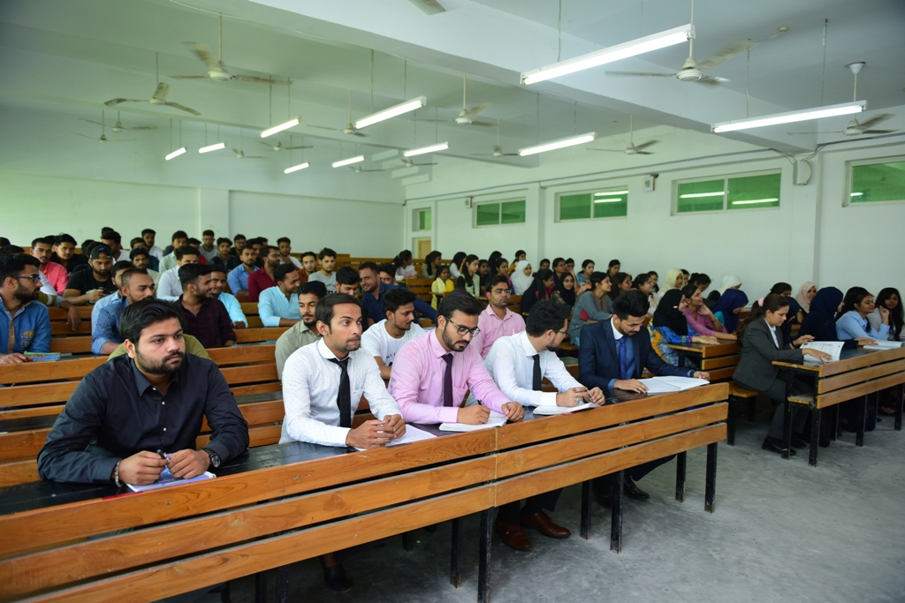

About bca department
The Department was established in 2003 and is one of the most reputed academic departments in the field of
Computer Application. The curriculum of this department is addressed to the students who wish to be distinguished
as Software Developer, Computer System Analyst, Software Engineer, Software
Application Architect, Hardware Engineer, Software Consultant, Database Administrator in the private and
public sector. You can become part of this highly competitive and futuristic environment by enrolling for one of
our exciting programs. The Department offers a 6 semester Bachelor program in Computer Application (BCA), 6
semester Master program in Computer Application,The combination of a dynamic and innovative curriculum that takes
advantage of the latest technologies, with the experienced faculties of the Department, creates a fertile ground
for the effective dissemination of knowledge and the development of the necessary skills for future professional
recognition of the Department's students... know more--

The Department promotes research advancements by offering doctoral program, contributing in the
creation of future researchers and powerful academicians. The thrust areas offered by the Department are Big
Data Analytics, Cloud Computing, Image Processing, Web Engineering, and Software Engineering. The department
has dedicated staff who, through on-going research, keeps abreast of new developments in respective fields of
study. Our staffs are very active researchers, publishing widely in international and local accredited journals,
presenting many papers at conferences and producing many other research outputs of high international standard.
INFRASTRUCTURE

Computer Centre caters to the computing needs of the faculty, staff and students for their research, teaching and learning activities. The University has a fully air-conditioned, state-of-the-art computer centre with over a thousand computer terminals installed. The Computer Centre has a number of high-end servers.Computer Centre also provides a wide range of systems and application software like statistical packages, image processing packages, RDBMS software, various advanced and special purpose software such as NetSim, Maya, Studio 8, Rational Rose etc.
Hostels for boys and girls with the capacity exceeding 2500 occupants, exist in the campus. Separate hostels for boys and girls are spread over 8 blocks.
Security deployed at every gate of the hostels keeps a close watch on each person's movements. CCTV monitoring of the campus is done round the clock.


The Central Auditorium has been built at the main University Campus for conducting National, International Conferences/Workshops, seminars, high level meetings and cultural events & performances etc. It is imperative to bring students face to face with National/International professional, Scientist, leaders, developers, distinguished personalities so that they are shaped for the future. The main hall & four small halls serve this purpose. The Auditorium is well equipped with state of Art technology